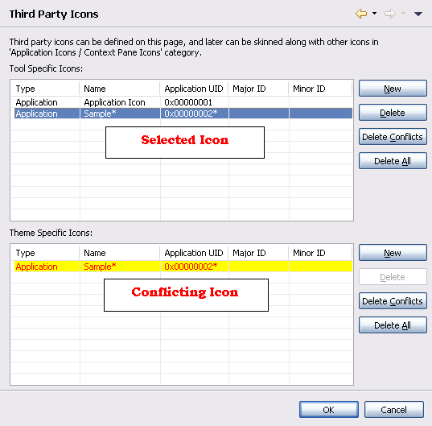

Because there could be several conflicting icons, Carbide.ui helps
identify specific conflicts. It does this by highlighting in yellow the
corresponding item when a conflicting item is selected, as shown in
Figure below.

Figure: Highlighting
Conflicting Icons
All the conflicting icons can be deleted from the respective groupings at one-shot by clicking on the "Delete Conflicts" button. Also "Delete All" button deletes all the Icons.